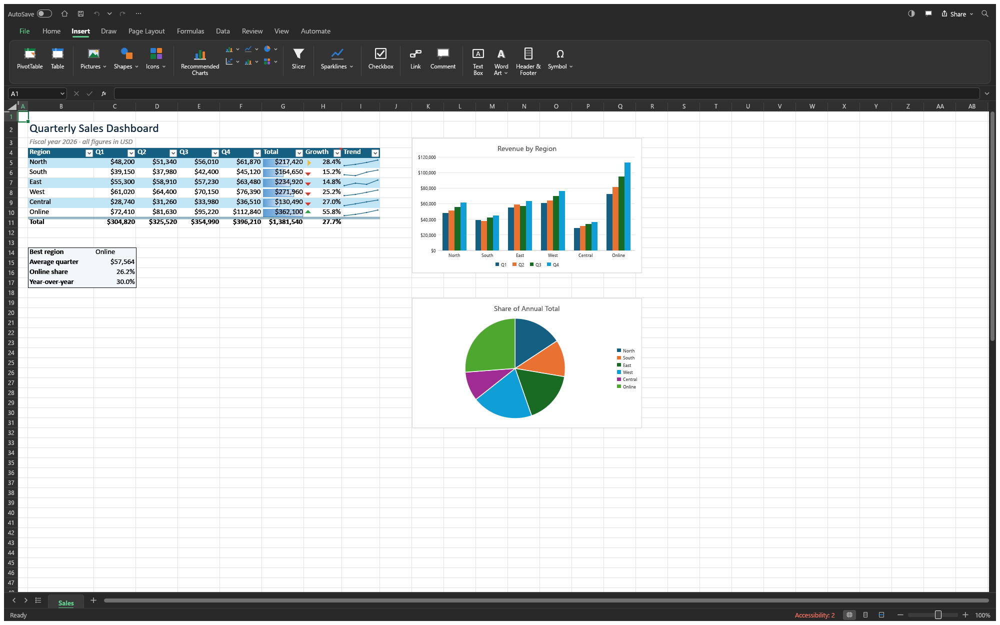
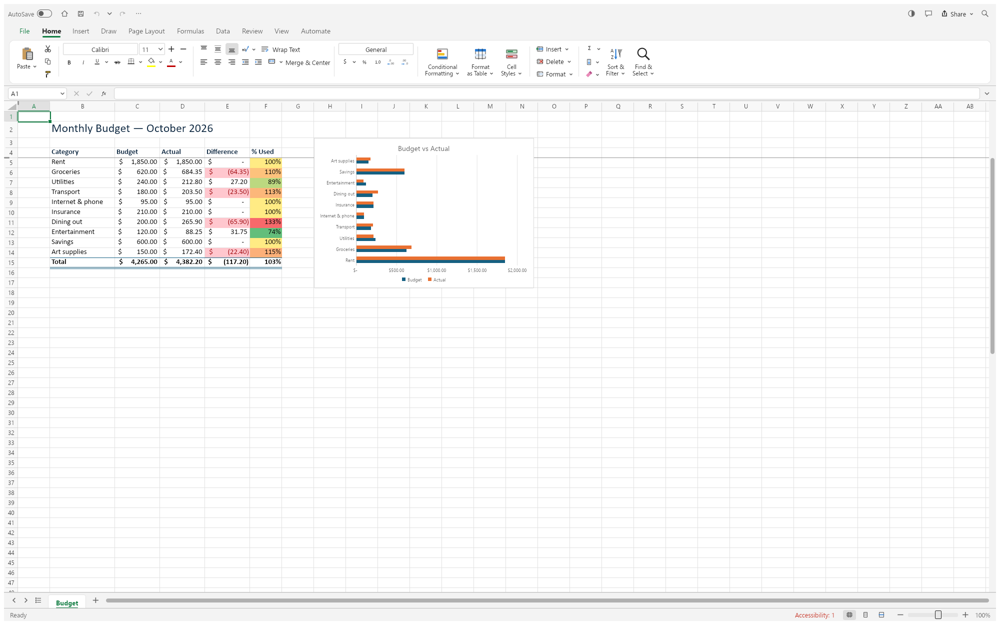
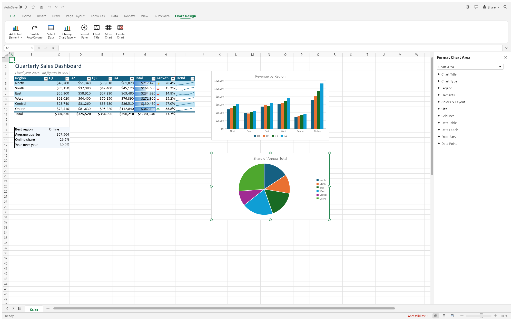

A spreadsheet with room to work.
Cella is an independent, open-source spreadsheet built in Rust. Analyze sales exports, check formulas in .xlsx workbooks, and script repeat edits.

From rows
to reports.
Read and write .xlsx and .csv. Excel compatibility is still in progress; test important workbooks on a copy first.
- Calculate
- 500+ formula functions, dynamic arrays that spill into the grid, and structured table references.
- Summarize
- Sort and filter tables, group records in PivotTables, and chart the results.






Same commands.
Four ways to work.
The desktop app, CLI, MCP, and local control channel share the same workbook commands. This CLI example summarizes a CSV by region and saves it as XLSX.
insert.pivotTablecella-cli run --in sales-sample.csv \
--cmd 'insert.pivotTable={"source":"A1:D7",
"rows":["Region"],"values":["Revenue"]}' \
--out sales-report.xlsxDownload the sample CSV, then run the command from its folder.
A million rows, measured
On the same ~70 MB XLSX file, Cella opens faster than Excel and WPS. Excel recalculates faster and uses a smaller working set.
The workbook contains 1 million rows, eight columns, and 2 million formulas. Open times exclude an additional full recalculation. After setting B1 to 3, all three apps returned the same final value.
Scroll the table horizontally to see every product.
| Measurement | Cella 0.13.0 | Excel 16.0.20527 | WPS 12.1.0.25222 |
|---|---|---|---|
| Open workbook | 3.1 s | 7.8 s | 11.7 s |
| Recalculate all 2M formulas | 1.30 s | 0.31 s | 16.9 s |
| Recalculate after editing B1 | 0.36 s | 0.08 s | 16.9 s |
| Working set after open | 996 MB | 588 MB | 987 MB |
| Private memory after open¹ | 1,341 MB | 468 MB | 864 MB |
| Idle working set | 196 MB | ~35 MB | 288 MB |
Lower times are better. Windows WMI supplied process memory. ¹ Private memory follows the source report’s measure; it is not the working set or live heap. These results describe one machine and workload.
Get Cella.
Cella runs on Windows, macOS, Linux, and BSD, and can be built for WebAssembly. Check the releases page for available desktop builds.